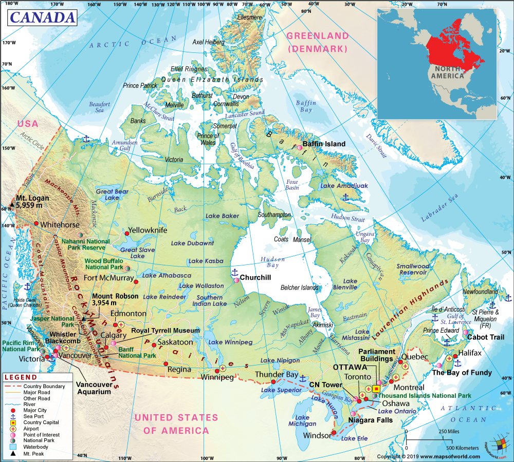

Kanada se člení na několik geografických oblastí. Největší z nich představuje Kanadský štít, který zabírá téměř polovinu země. Tuto oblast, která má tvar jakési mísy se středem kolem Hudsonova zálivu, tvoří vyvřelé a metamorfované horniny předprvohorního stáří. Na východě sahá až k zálivu Sv. Vavřince, na západě zasahuje do oblasti od jezera Winnipeg na jihu až po Velké Medvědí jezero na severozápadě. Na východ od Kanadského štítu v jižním Ontariu a jihozápadní Quebeku se rozkládají nížiny Velkých jezer a povodí řeky Svatého Vavřince. Tato mnohem menší oblast je nejzalidněnější částí Kanady. Mírně zvlněná krajina poloostrova Bruce je ohraničena Hurónským jezerem a Jiřskou zátokou (Georgian Bay), Erijským a Ontarijským jezerem. Obě jezera spojuje řeka Niagara, která se přes strmý práh řítí z padesátimetrové výšky a vytváří vodopády široké více než 1200 m. Ontarijská nížina na severozápad od Niagarských vodopádů představuje území modelované ledovcem, pokryté drumliny – protáhlými pahorky vytvořenými z horninového materiálu, který tu zanechal ustupující pevninský ledovec. Na severovýchod odtud se rozkládají nížiny Ottavského údolí a jižního Quebeku. Na východ od Quebeku leží oblast, která je známá pod jménem Apalačská Kanada a zahrnuje atlantské provincie Nového Brunšviku, ostrov prince Edwarda, Nové Skotsko a ostrov Newfoundland. Rozeklané horské hřbety tu vznikly vrásněním starších hornin, které byly následně obrušovány ledovci a drsným klimatem. Nejvyšších výšek dosahují pohoří Notre Dame, které se rozkládá severovýchodně od Quebeku podél širokého ústí řeky Sv. Vavřince, a Long Range Mountains na Novém Foundlandu. Na jihozápad od kanadského štítu a Hudsonova zálivu leží Velké planiny – rozlehlé prostory ve tvaru trojúhelníku, které pokrývají střed země a zabírají asi pětinu její rozlohy. Manitobská nížina je protkána sítí jezer, většina z nich jsou pozůstatky obrovského jezera, které celou tuto oblast pokrývalo v době, kdy odtud ustupoval poslední ledovec. Ledovcové a říční usazeniny s pomocí větru daly základ úrodným půdám prérií, na kterých se pěstuje zejména pšenice. Na západě jezerní oblasti se zvedá členitější nízký hřbet Manitobského prahu, za nímž se rozkládá kopcovitý terén Saskatchewanské planiny. Valící se voda z tajících ledovců prorazila v zemi široká říční koryta se strmými břehy. Směrem na západ v provincii Alberta terén dále stoupá. I v této oblasti pohyb ledovce způsobil veklou erozi a vytvořil zvlněnou náhorní plošinu. Na západ od Velkých planin se táhnou kanadské Skalnaté hory až k samotnému pobřeží Tichého oceánu. Toto mohutné pásmo je široké asi 800 km a táhne se v délce zhruba 200 km od Aljašky přes území Yukonu, západní Albertu až do Britské Kolumbie a dále do USA. Jeho západní větev tvoří divoké Přímořské hory (Coast Mountains) dosahující výšky až 4000 km. Mezi ním a Rocky Mountains na východě je široké pásmo velehorských náhorních plošin (Yukon, Stikine, Nechako a Fraser Plateau). Východní větev začíná na severu pohořím Mackenzie a pokračuje k jihovýchodu vlastními Skalnatými horami s řadou mohutných štítů z mladších hornin vysokých téměř 400 metrů (Mount Robson 3954 m) na hranicích Britské Kolumbie a Alberty. Rovnoběžně se Skalnatými horami se na severu při západním pobřeží táhne pohoří svatého Eliáše (s vyhaslou sopkou Mt. St. Elias 5489 m), kde se nalézá nejvyšší hora Kanady Mount Logan s nadmořskou výškou 5951 metrů. Dále na jih pokračují Přímořské hory a celé pobřeží je členěno hlubokými fjordy a množstvím ostrovů. Ostrovy královny Charlotty a ostrov Vancouver v Tichém oceánu jsou vlastně vrcholy dalšího rovnoběžného horského pásma. Na sever od kanadského štítu leží arktické ostrovy, které hraničí se stále zamrzlým mořem Severního ledového oceánu. Velká část volného moře je pokryta vrstvou ledu silnou asi 3 metry, přesto jen polovina plochy ostrovů je také zaledněna. Na severovýchodě nadmořská výška ostrovů stoupá a na ostrově Ellesmere a podél východního pobřeží Baffinova ostrova se už rozkládá velehorská krajina. Skalnatý horský terén je z větší části obklopen ledovým a sněhovým příkrovem a některé masivy jsou celé pokryty obrovskými ledovci.
PodnebíKanada má více než v polovině území subarktické podnebí, s chladnými léty a velmi studenými zimami – často studenějšími než v samotné Arktidě, kde výskyt extrémně nízkých teplot oslabují vody Severního ledového oceánu. Zima začíná v polárních krajích v srpnu. Až do prosince teplota rychle klesá a do března zůstává nízká. Také Atlantský oceán, který má stálejší teplotu, zmírňuje podnebí v těch místech, kde jeho vody vtékají do polární oblasti. Způsobuje tak mírnější zimy, chladnější léta a vyšší srážky. V létě nedosahují teploty na arktických ostrovech přílišných výšek, i když ve vnitrozemí mohou v některých oblastech nastat krátká období tepla, při nichž teploty vystupují ke 30 °C. Dále na jih je podnebí typicky kontinentální s horkými léty a studenými zimami. Nejtepleji je v jižním Ontariu, v oblasti Velkých jezer. Nejmírnější zimy jsou na jihovýchodním a hlavně na západním pobřeží, které má charakteristické oceanické klima. Větry vanoucí z moře přinášejí silné dešťové a sněhové srážky Přímořským horám, ale za nimi se nachází oblast ve srážkovém stínu, suchá zejména v zimě. V létě známé prérijní bouřky poskytují srážky celé rozsáhlé oblasti Velkých planin. Dále na východě jsou zdrojem vláhy Velká jezera. Vlhký vzduch od Atlantského oceánu přináší v létě do Kanady hojné dešťové srážky a v zimě obzvlášť husté sněžení zejména Newfoundlandu a Novému Skotsku.
RostlinyHranice lesů v severní Kanadě probíhá v oblouku ze středního Labradoru pod poloostrovem Ungava k východnímu pobřeží Hudsonova zálivu. Pokračuje podél jeho pobřeží dále směrem k severozápadu až k Velkému Medvědímu jezeru a ústí řeky Mackenzie a nesouvisle na Aljašku. Dále na sever se rozkládá oblast, které se říká Barven Grounds a kde je půda většinou věčně zmrzlá, rozmrzající v létě do hloubky několika centimetrů, prorostlá sporou formací tundry. Severní část tundry, která tvoří asi 1/10 arktických pustin, pokrývají mechy a lišejníky. V jižnější oblasti rostou zakrslé stromy, keře, nejodolnější trávy a ostřice. Pod pásmem lesotundry, ale stále ještě v severní polovině země, se rozkládá jeden z největších pásů jehličnatých lesů na světě, který se táhne od Aljašky až k Novému Foundlandu. Na jihovýchodě Kanady se od oblasti Velkých jezer až po atlantské pobřeží rozprostírají smíšené lesy s javory, buky, jedlemi a kanadskou tsugou. Ovšem v nížinách na jihu země se vyskytují jen lesy listnaté; daří se tady americkému ořechu, dubu a jilmu, ale také kaštanu, javoru a běžnému ořechu. Ve východních horách jsou nejčastěji rozšířeny smrky. Douglasovy jedle a borovice, na náhorních plošinách rostou také osiky a žluté borovice. Podél pobřeží Tichého oceánu se táhne jeden z nejpůsobivějších lesních komplexů světa, s hustými porosty jedle douglasky, západního červeného cedru a kanadské tsugy. Oblast prérií na jihu země je příliš suchá, lesům se tam nikdy nedařilo. Vyskytují se zde spíše travní společenstva. Dnes však z původního charakteru krajiny zůstalo málo, úrodná černozem byla zorána a všude se vlní obrovské lány obilí.
ŽivočichovéVe vodách studeného ledového oceánu žijí velryby, mroži a tuleni. Do arktické zvířeny patří lední medvědi, kteří tráví život jak ve vodě, tak na souši. V tundře žijí sobi polární, pižmoni, vlci, polární lišky a lumíci. Léto tam tráví mnoho stěhovavých ptáků, mezi něž patří především alka, mořská kachna, racek, rybák obecný a kulík. V severních lesích se daří polárním sobům, losům, rosomákům, mývalům, černým a hnědým medvědům. Lov bobrů, kun, ondater pižmových, norků a dalších kožešinových zvířat v této oblasti vytvořil kdysi základ prosperujícího obchodu s kožešinami. Dnes se většina těchto zvířat množí na specializovaných farmách. Dále na jihu Kanady je rozšířen jelenec virginský, ve více obydlených oblastech žijí převážně menší savci – šedé a rezavé veverky, daňci, lasice a vydry. Typickými zástupci ptactva jsou kardinál červený, budníček lesní, baltimorská žluva a severoamerický drozd. Na prériích se daří menším zvířatům, jako jsou severoamerické druhy zajíců, syslů a tetřevů, přežívají tam bizoni a vidlorozi (přežvýkavci podobní antilopám). Podmínkám života v západních horách se dobře přizpůsobily takové druhy zvěře jako ovce tlustonohá, horská koza, svišť a jejich přirozený predátor puma.
Mapa Kanady: Základní
Příroda: